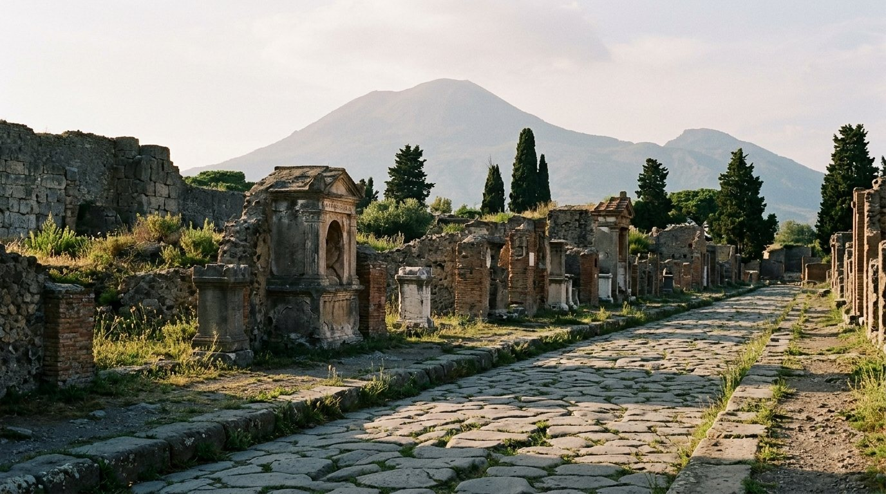
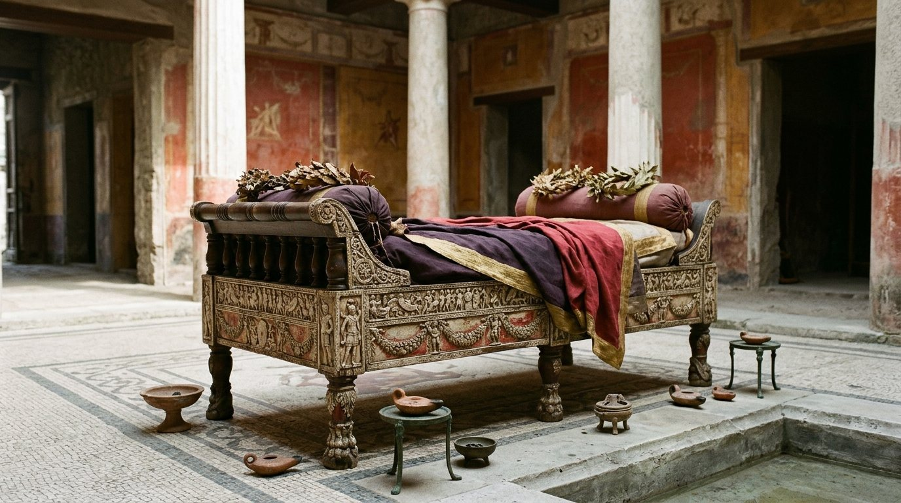
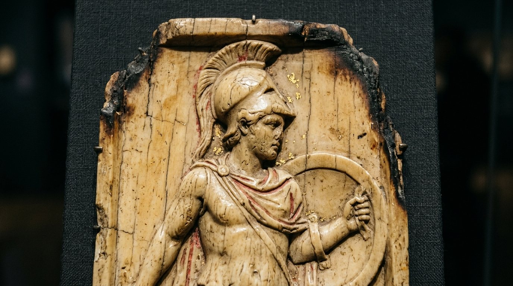

Guerreros y Oro para el Último Viaje: los Lechos Funerarios de Pompeya
En Roma, la muerte era un espectáculo público. El cuerpo del difunto se exponía en su casa sobre un lecho funerario, el lectus funebris, y después se trasladaba en procesión hasta la necrópolis, a las afueras de la ciudad, donde se colocaba con el mismo lecho sobre la pira. El fuego lo consumía todo. Por eso, de las camas más lujosas solo quedan, en el mejor de los casos, los fragmentos de hueso tallado que las revestían, deformados y ennegrecidos por las llamas.
Dos mil piezas de un rompecabezas
Un estudio publicado en el Journal of Roman Archaeology por Pilar Mas Hurtuna, Llorenç Alapont Martín y Agustín Ángel Diez Castillo ha reunido más de 2.000 de esos fragmentos para reconstruir cómo eran. Las piezas proceden de las cremaciones de la necrópolis de Porta Nola, excavada desde hace una década por un equipo de la Universitat de València, y de la llamada Casa del Fabbro, dentro de la ciudad, donde los investigadores proponen que pudo funcionar un taller relacionado con la fabricación de muebles.
Comparando los fragmentos de ambos contextos, el equipo identificó las placas que cubrían las patas torneadas, los cabezales y los frisos de los lechos: piezas de hueso labradas en relieve, ensambladas sobre una estructura de madera que no se ha conservado.

Un desfile militar en miniatura
La iconografía sorprende por su carácter marcial. Las placas muestran guerreros con yelmos de estilo ático, escudos helenísticos de forma hexagonal, rectangular y en media luna, y guirnaldas como las que se usaban en los desfiles triunfales. Conservan además restos de pigmento rojo y de pan de oro: los lechos no eran blancos como el hueso, sino que brillaban con color y metal cuando la procesión atravesaba la ciudad.
Según los autores, esas imágenes cumplían dos funciones. La primera era social: un funeral romano era la última ocasión en que una familia mostraba su rango ante los vecinos, y un lecho cubierto de oro y escenas heroicas lo proclamaba sin palabras. La segunda era simbólica: el lenguaje del triunfo militar convertía el último viaje en una victoria sobre la muerte. El difunto no era derrotado por el fuego; desfilaba hacia él como un general hacia el Capitolio.
Lo que el fuego no se llevó
Los lechos funerarios decorados con hueso o marfil se conocen en otros puntos de Italia, como Cumas o la propia Roma, pero rara vez es posible estudiarlos en el mismo lugar donde se fabricaron y donde se quemaron. Pompeya ofrece esa combinación excepcional: un posible taller dentro de la ciudad y las piras en sus necrópolis, a pocos cientos de metros, congeladas por la erupción del 79 d.C.
El trabajo demuestra que incluso de un objeto destruido a propósito se puede recuperar la forma, el color y el mensaje. Y recuerda que, para los pompeyanos del siglo I, la muerte no se lloraba solo con lágrimas: también se vestía de oro.

"El difunto no era derrotado por el fuego; desfilaba hacia él como un general hacia el Capitolio."
— HISTORIKA · Hallazgos II
Fuentes y referencias
- Arkeonews (11/2026)
- GreekReporter (13/11/2026)
- Journal of Roman Archaeology (2026)
Lee la revista
Hojea gratis Hallazgos II →